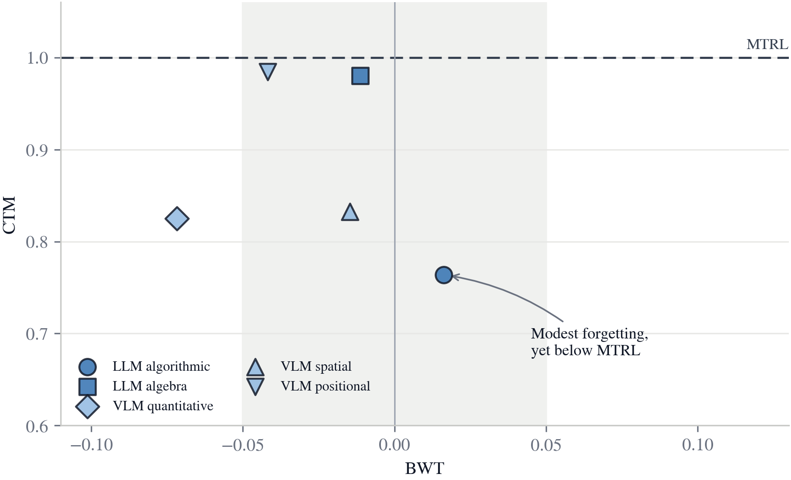
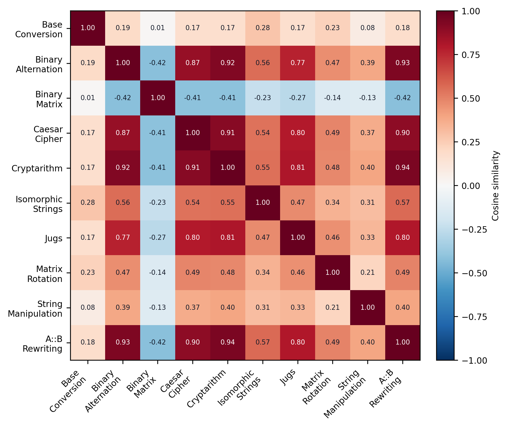
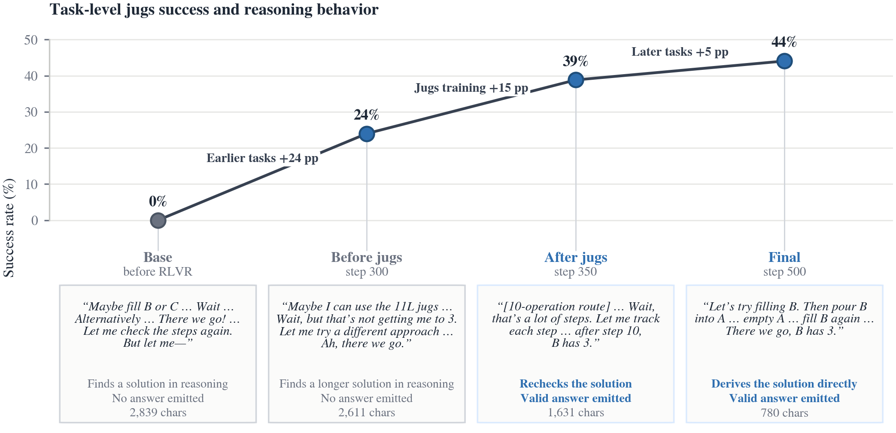
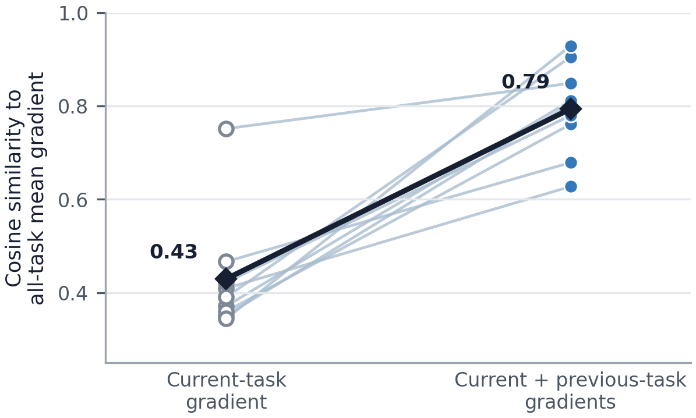
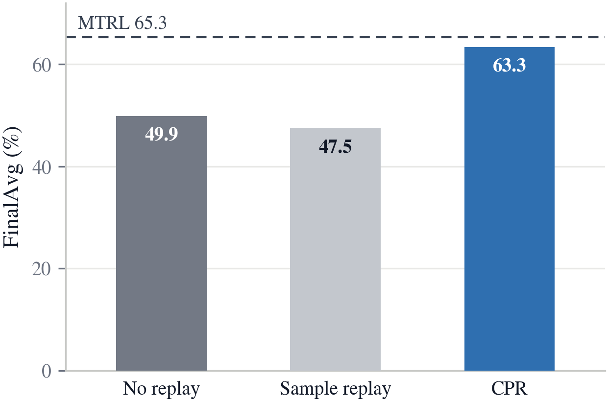

1State Key Lab of General AI, School of Intelligence Science and Technology, Peking University2State Key Laboratory of General Artificial Intelligence, BIGAI3Institute for Artificial Intelligence, Peking University4Beijing Institute of Technology
Shared reasoning explains modest forgetting. CPR harnesses it to improve learning on the arriving and future tasks.
TL;DR
Sequential RLVR forgets modestly, yet still trails joint training.
Continual Reasoning Gym (CRG) turns continual RLVR into a reproducible training and evaluation environment across text and visual reasoning. We identify shared reasoning: training on one task benefits others on average. Continual Prompt Replay (CPR) brings previous-task prompts into current-policy training to harness this pattern and is the only evaluated continual-learning method that reaches MTRL-level performance on average.
The key observation
Modest forgetting does not close the MTRL gap.
Seq. RLVR loses little performance on earlier tasks, but final performance remains below multitask RLVR. Decomposing final performance shows that preserving earlier tasks is only part of the problem. A continual method must also improve learning on the arriving and future tasks.
Earlier-task change−2.47 ppmean BWT under Seq. RLVR
Final performance0.88mean continual-to-multitask ratio
DiagnosisBeyond retentionthe remaining gap lies in learning arriving and future tasks

Each marker is one task sequence. Seq. RLVR remains below MTRL even where forgetting is modest.
Why forgetting is modest
Reasoning structure is shared across tasks.
Task-gradient measurements show that updates on one reasoning task benefit other task objectives on average. The same pattern appears in model behavior: jugs performance improves before its own stage and again during later-task training, while the reasoning progresses from unresolved attempts to valid, more direct solutions.
0.345mean task-gradient cosine
82.2%task pairs with positive cosine
0% → 44%jugs success across the sequence

Task gradients are positively aligned on average under Seq. RLVR.

A jugs case illustrates shared reasoning in task performance and reasoning behavior.
Continual Prompt Replay
Bring previous tasks back through the current policy.
CPR stores prompts rather than old trajectories. At each update, previous-task prompts replace part of the current-task batch, and the current policy generates fresh responses for all sampled prompts. This changes the task-sampling distribution without increasing prompt or rollout counts per update.
01
Retain prompts
Keep compact prompt records from earlier tasks.
02
Mix tasks
Replace part of the arriving-task batch with previous-task prompts.
03
Regenerate on policy
Sample and verify fresh responses with the current policy before updating.
Headline result
CPR reaches MTRL-level performance on average.
1.03mean CTM
+6.4 ppFinalAvg vs. Seq. RLVR
0.43 → 0.79alignment with all-task mean
Adding previous-task directions makes the update better aligned with the mean gradient across the full task set in all nine measured comparisons.

Previous-task gradients better align updates with the full task set.

Only prompt replay with current-policy regeneration improves over no replay in this comparison.
Mechanism ablation
Current-policy regeneration matters.
On LLM algorithmic reasoning, CPR reaches 63.3% FinalAvg. Reusing trajectories from an earlier policy reaches 47.5%, below the 49.9% no-replay result.
No replay49.9
Sample replay47.5
CPR63.3
Continual Reasoning Gym
Five sequences across text and visual reasoning.
CRG organizes related reasoning tasks into staged training streams and evaluates every stage policy across the full sequence. The environment covers two procedurally generated text settings and three VisuLogic-derived visual settings.
Policy training proceeds stage by stage through a sequence of verifiable reasoning tasks.
Citation
BibTeX
@article{luo2026continualreasoninggym,
title = {Continual Reasoning Gym: Diagnosing and Harnessing Shared Reasoning in Continual RLVR},
author = {Luo, Lirui and Zhang, Guoxi and Xu, Hongming and Li, Rongqing and Fang, Cong and Fan, Lifeng},
journal = {arXiv preprint},
year = {2026}
}